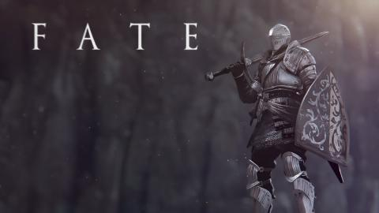

Historia de Dark Souls 1
Guia del juego
Canal PowerBazinga
Sinopsis
Dark Souls es un videojuego de rol y acción, desarrollado por FromSoftware para las plataformas PlayStation 3, Xbox 360 y Microsoft Windows, distribuido por Bandai Namco Entertainment. Dark Souls tiene lugar en el reino ficticio de Lordran. Los jugadores toman el papel de un personaje humano no-muerto que ha sido elegido para realizar un peregrinaje para descubrir el destino de los no muertos.

Nuestro personaje
Al principio del juego podremos customizar nuestro personaje, por ejemplo elegir nuestra clase (mago, caballero, bandido, etc) y tambien podremos modificar su aspecto fisico. En la trama principal, nuestro personaje se encuentra encerrado en una prision de no muertos, ya que nosotros somos uno. Un ser no muerto fue un humano maldecido, el cual no puede morir de una forma definitiva, si no que al morir reaparece de una forma mas debil y poco a poco se va convirtiendo en hueco (Practicamente se vuelve loco) La mision de nuestro personaje es avivar la llama original para que el mundo no vuelva a la edad oscura,pero para llegar a esta necesitaremos enfrentar muchos enemigos.
Video historia de Dark Souls 1